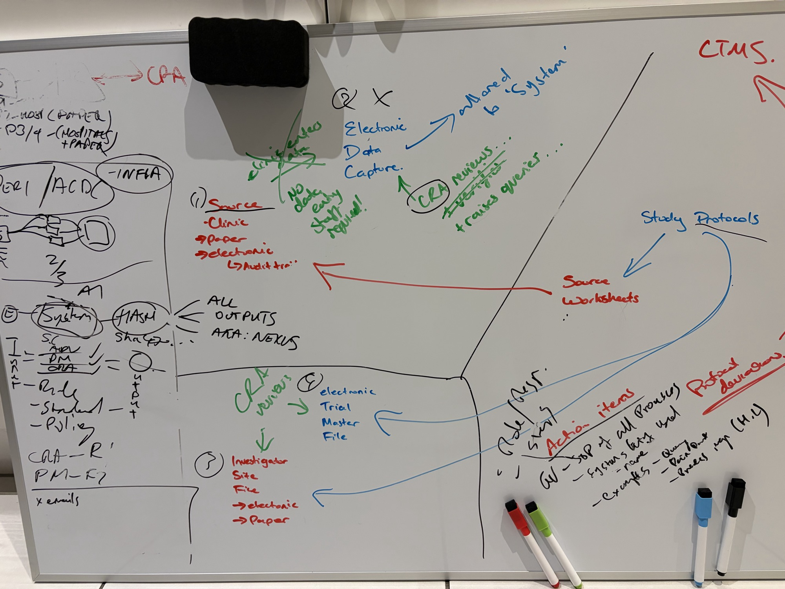
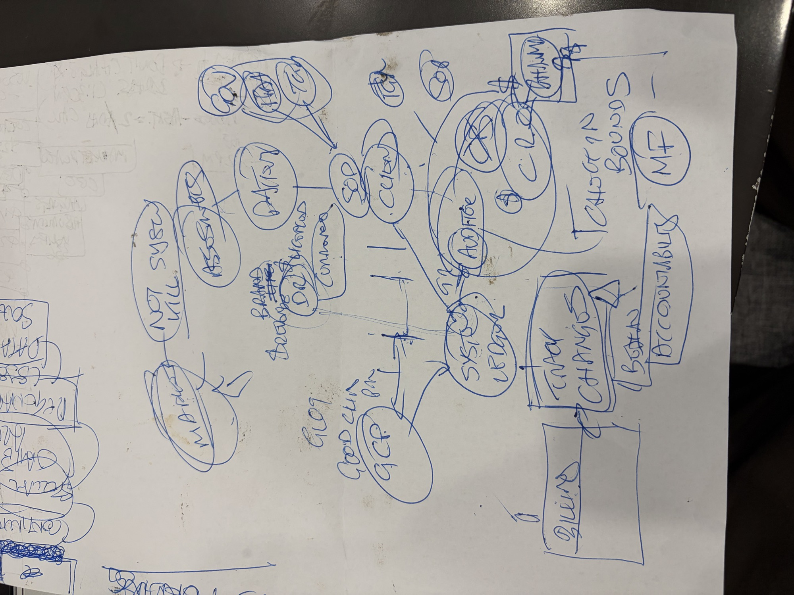

The risk is built into the gaps between systems.
A CRA's job is protecting participants and data quality. Much of the week goes on moving the same facts between systems instead. Each hop is a chance for an error, a late deviation or an audit finding. Press play and watch one data point travel.
Duplicate entry
Source Data Verification exists largely to catch errors the process itself introduced by re-keying.
Shadow spreadsheets
Trackers for documents, deviations, actions and payments live outside validated systems, with no audit trail and no access control.
Email as the record
Query answers, approvals and decisions sit in inboxes, invisible to anyone who later has to show what happened.
Late detection
An out-of-window visit or a consent on a superseded version is found weeks later, at the next visit, not when it happens.
No shared truth
CTMS, EDC, eTMF, ISF and the safety database each hold part of the picture. People do the reconciling.
Evidence after the fact
Being ready for inspection is a project you run, not a state the system keeps you in.
Clinical sites, CRAs and sponsors run regulated, safety-critical work through disconnected systems. No single place holds a record, its checks, its approvals and its reason together.
The whiteboard and the napkin.
Our reading of the two sets of notes. Where the handwriting is ambiguous, it's marked. Correct anything we've misread.

- Protocol → source worksheets → sourcePaper or electronic, always with an audit trail.
- EDC "allocated to System"No data-entry staff required. Capture once and the system populates the EDC.
- CRA reviews + raises queriesA move from transcription checking to risk-based review.
- ISF · eTMF · CTMSThe document stores the protocol feeds, which must reconcile.
- KERI / ACDC · Hash · "All outputs = Nexus"Trust infrastructure: every output hashed and provable.
- SC / ADV / PM / CRA → OUTPUTEach role gets its own output. "CRA – R, PM – F" starts the access matrix. (ADV: to confirm.)
- Rule · Standard · PolicyThe three-tier rules engine.
- Action itemsSOP of all processes · systems used · query · data point · breaches map · protocol deviations.

- GCP → System LedgerGood Clinical Practice is the frame; the ledger is the spine.
- Gov / FDA / TGA → SOPRegulators set rules that SOPs implement.
- Clinic · Pharma · CRO · Auditor · $The actors and the money between them.
- Sponsor / Dr · controlledControlled documents between sponsor and investigator.
- Track changes ↔ BillingBill from what the trail proves was done.
- Burden / AccountabilityWho does the work vs who answers for it.
- "Check in bounds" · MFAutomatic bounds checking; the Master File.
- "Not system kill" (?)We read this as: overlay the existing systems, don't replace them.
Seven layers, one thread.
TrialThread sits across the systems sponsors already mandate. It doesn't replace them. Click a layer.
Principles
- Not a system-killer. Overlay and connect.
- Capture once. Everything else is a reference.
- Check at the door. Rules run on arrival.
- AI proposes, a named human disposes.
- Every decision carries its reason.
- Least privilege by default. Role and blinding decide.
- Start without patient data.
Drop anything in. Watch it flow.
One intake for every record. Pick a sample document and run it through the eleven steps: capture → classify → extract → confirm → check in bounds → reconcile → route → act → sign → hash → file.
The ladder from law to record.
Every check traces up a ladder. The whiteboard's Rule → Standard → Policy sits inside it. Switch jurisdiction to see what applies.
Regulatory register
Check each item against the current official text before relying on it. Current to our understanding as of October 2026.
| Instrument | Where | Governs | What it means for TrialThread |
|---|
Part 11 / E6(R3) control matrix
| Requirement | Ref | How TrialThread meets it |
|---|
A verified context graph for every decision.
Every regulation clause, protocol section, SOP step, record, data point, finding, decision and signature is a node. Edges say why. Click the orange decision node, or press "Why?", to trace a deviation back to its sources. Drag nodes to rearrange.
Deterministic in, cited out
Reuses the Emergence ingestion contract: a gated membrane with no LLM between source text and atom. AI can propose edges; curation decides.
Amendments without amnesia
supersedes edges show which decisions were made under which protocol version. That's what an inspector asks first.
The breaches map
Patterns across the graph show which protocol sections and SOP steps generate deviations. That feeds quality by design (ICH E8(R1)).
Same record. Every role sees what it should.
Pick a role. The matrix shows what they can do (Create · Read · Update · Sign · Approve) and the card shows their home screen. AI agents are a role too: they can propose, never sign.
Signatures as credentials
Each signature carries name, time and meaning (21 CFR 11.50) and is cryptographically bound to the record hash (11.70). A passkey re-authenticates at the moment of signing.
Segregation of duties
The author can't approve their own report. Blinded and unblinded spaces never mix. Inspector access is read-only and time-boxed.
Burden vs accountability
The record shows who did the work (often the coordinator) and who answers for it (the PI). E6(R3) investigator oversight needs both.
The CRA's Monday morning, rebuilt.
One cockpit across every sponsor and site. It's built on the selfdriven Human Interface Kit 3.0 language: warm neutral canvas, ember accent, Poppins, passkey sign-in and a deliberate signing moment.
Ten small automations that retire the spreadsheets.
Mostly deterministic and small, each one a module. These are the day-one value, before any clever AI.
Bottom-up, from the CRA outward.
Big platforms serve the sponsor; site tools serve the site. The CRA works across sponsors, CROs and sites, and has no tool of their own. That's the wedge.
Positioning
| Category | Examples (public) | Centre of gravity | Our angle |
|---|
How we'd know it works
Start without patient data.
Each phase earns the right to the next. Participant data arrives only once validation, security and hosting are ready for it.
Risks
| Risk | Likelihood | Impact | Response |
|---|
AI checks all the work. Giau observes it.
Eight AI observers, one per Area of Focus, check 100% of the CRA work continuously. Giau, as conductor, reviews only what they raise, confirms or regrades it, signs with her passkey, and presents a verifiable picture to the board. Being once removed from doing the work is what lets her judge it. This is the selfdriven observer framework, applied to clinical operations.
Machines watch at volume
Every consent form, report statement, visit window, training record and query, against its rule. Read-only observers that sign every observation.
People decide
Only Giau's signature makes a finding final. Dismissals need a reason. The CRA sees and replies first: the observers look at the work, not the worker.
The board gets proof
Three questions, signed answers, one decision requested. Every number links to a signed record an inspector can verify.
Eight areas, one project.
This folder is a conducting portfolio. Each area holds its part of the plan in workings/ and its Conducting Score. Click an area to read it here.